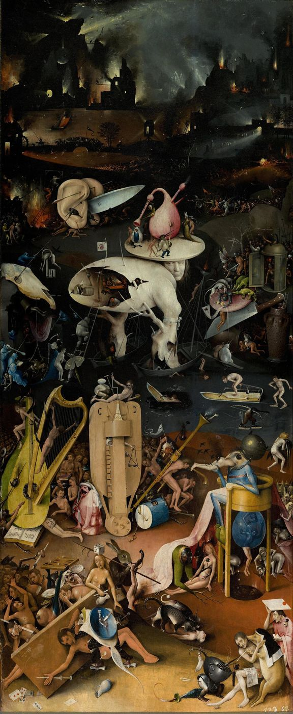
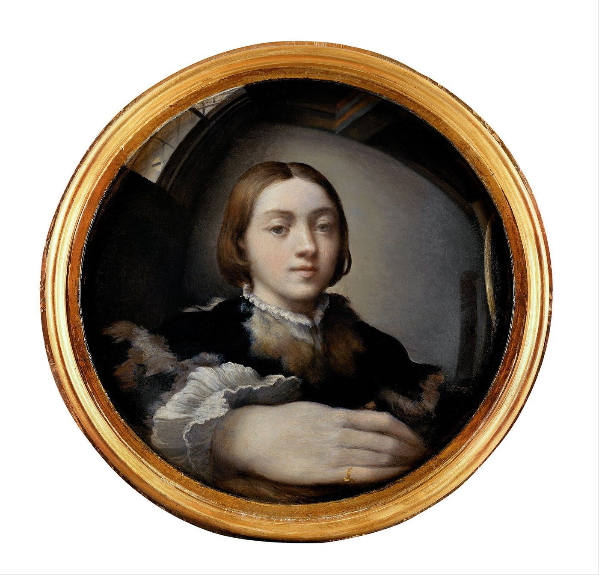
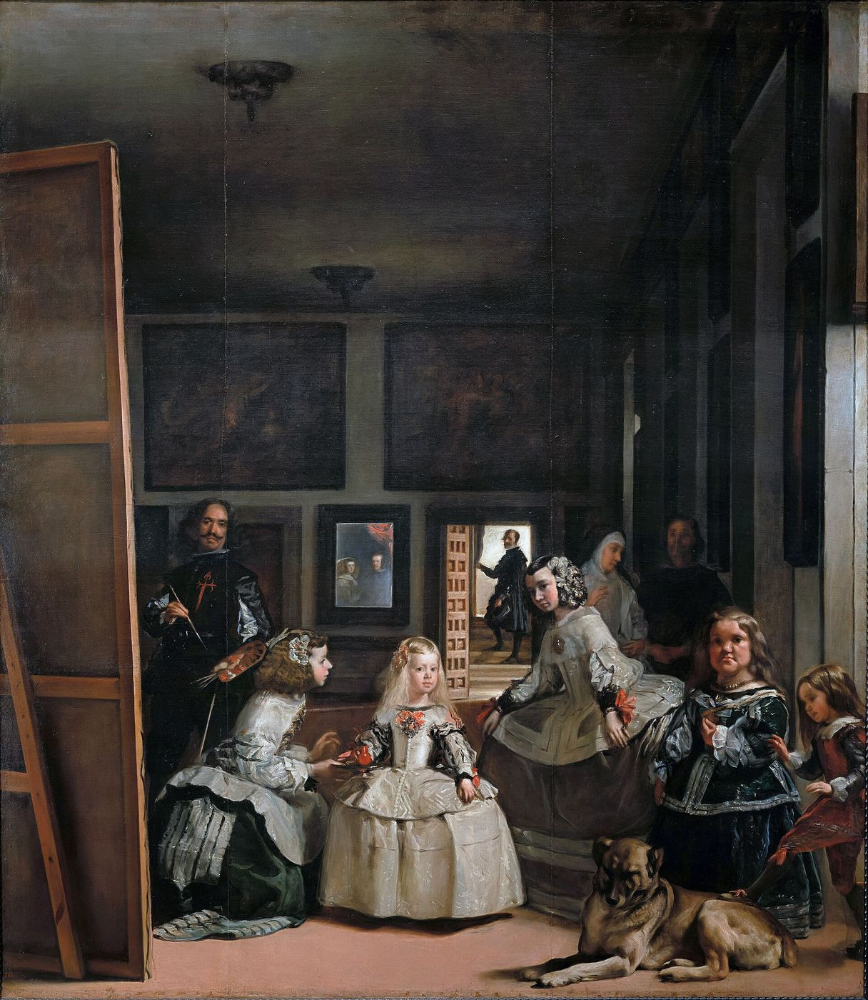

Car Je est un autre.
Arthur Rimbaud, Paul Demeny’ye mektup, 15 Mayıs 1871
I
Ağustos 1936’nın başında, Çekoslovakya’nın kaplıca kenti Marienbad’da Uluslararası Psikanaliz Birliği’nin on dördüncü kongresi toplandı. Avrupa’nın üzerine yeniden savaş bulutlarının çöktüğü, Viyana’daki psikanalistlerin kaygıyla geleceklerini düşündüğü bir yazdı; Freud, 1922’den beri olduğu gibi, kongreye katılmamıştı. Otuz beş yaşındaki genç Fransız psikiyatr Jacques Lacan, ayna evresi üzerine bir konuşma yapmak üzere kürsüye çıktı. Oturumu yöneten Ernest Jones, on dakika sonra, süresinin dolduğunu söyleyerek onu durdurdu. Lacan konuşmasını tamamlayamadı, metni kongre tutanaklarında yayımlanmak üzere teslim etmedi ve kongrenin bitmesini beklemeden Berlin’e, Olimpiyat Oyunları’nı izlemeye gitti.1
Sahnenin kendisi, anlattığı kuram kadar öğreticidir. Genç bir analist, psikanalizin kurumsal babalarından birinin karşısında, imgeye, tanınmaya, bütünlük yanılsamasına dair bir kuram anlatmaya çalışır ve sözü kesilir. Konuşması tanınmaz; metni kaybolur. Lacan’ın sonraki kırk yıl boyunca psikanalitik kurumlarla yaşadığı çatışmalar, standart seans süresine karşı savaşı, Uluslararası Birlik’ten çıkarılışı, belki bu ilk kesintide habercisini bulur. Ayna evresinin ilk sunumu, bir tanınma talebinin geri çevrilmesiyle sonuçlanmıştır.
Bugün okuduğumuz metin, Lacan’ın on üç yıl sonra, Temmuz 1949’da Zürih’teki on altıncı uluslararası kongrede sunduğu ikinci versiyondur: “Ben işlevinin oluşturucusu olarak ayna evresi, psikanalitik deneyimde bize açığa çıktığı biçimiyle.” Aynı yıl Revue française de psychanalyse’de yayımlanan bu kısa metin, 1966’da Écrits’e alındı ve yirminci yüzyılın en çok alıntılanan psikanaliz metinlerinden biri oldu.2 Ama 1936 ile 1949 arasında, kuramın bir öncesi, bir de kaynakları vardı ve bunlar metnin kendisinde pek görünmez.
II
Bir bebeğin aynayla karşılaşması, psikanalizden çok önce bilim insanlarının dikkatini çekmişti. Charles Darwin, 1877’de Mind dergisinde yayımladığı, oğlu William’ın ilk yıllarına dair notlardan oluşan kısa yazısında, dört buçuk aylık bebeğin aynadaki kendi imgesine ve babasının imgesine tekrar tekrar gülümsediğini, onları gerçek varlıklar sandığını, babasının sesi arkasından geldiğinde ise şaşırdığını kaydeder.3 Alman psikolog Wolfgang Köhler de Birinci Dünya Savaşı yıllarında Tenerife’de şempanzelerle yaptığı ünlü deneylerde maymunların aynalarla ilişkisini gözlemlemişti. Lacan 1949 metnine, Köhler’in gözlemlerine dayanarak kurduğu bir karşıtlıkla başlar: Şempanze aynadaki imgenin boş olduğunu, arkasında bir şey bulunmadığını anladığı anda ondan ilgisini çeker. İnsan yavrusu, aynı yaşlardaki bir şempanzeden zekâ bakımından geride olduğu bir dönemde, aynadaki imgesini tanır ve şempanzenin tersine, bu imgeden ilgisini çekmez; onunla oynamaya, onu sevinçle üstlenmeye başlar.
Lacan’ın metnindeki en önemli sessizlik ise başka bir adla ilgilidir. Fransız psikolog Henri Wallon, 1931’de yayımladığı bir makalede ve 1934’te çıkan Çocukta Karakterin Kökenleri kitabında, çocuğun aynayla ilişkisini ayrıntılı biçimde incelemiş, ona “ayna sınavı” adını vermişti. Wallon’a göre çocuk, aynadaki imgenin kendisinin bir görüntüsü olduğunu, yani kendi bedeninin dışarıdan nasıl göründüğünü yavaş yavaş, deneyerek öğrenir; bu öğrenme, kendi bedenine dair bir kavramın, Wallon’un deyişiyle “öz beden” kavramının, oluşmasının bir aşamasıdır.4 Lacan bu gözlemi aldı, ama ona Wallon’un hiç düşünmediği bir anlam yükledi ve Wallon’un adını metninde hiç anmadı. Roudinesco’nun deyişiyle, ayna evresinin tarihi bir silinmenin tarihidir.
Lacan ile Wallon arasındaki ayrım, metnin bütün özgünlüğünü taşır. Wallon için ayna, çocuğun gerçekliği daha iyi kavramasına, kendi bedeninin dışarıdan görünüşünü öğrenmesine yarayan bir bilişsel araçtır; ayna deneyimi bir ilerlemedir. Lacan içinse aynadaki tanıma bir ilerleme değil, bir yanılgının, temel ve kurucu bir yanılgının başlangıcıdır. Çocuk aynada kendini tanıdığı anda, kendisi olmayan bir şeyle, bir dış imgeyle özdeşleşir; ve bu özdeşleşme, onun benliğinin, yani hayatı boyunca “ben” diyeceği şeyin çekirdeğini oluşturur.
Lacan’ın aynaya ilgisinin bir kaynağı da, gençliğini geçirdiği Paris psikiyatri kliniğiydi. 1930’da Fransız psikiyatr Paul Abély, bazı hastaların, özellikle o dönemde erken bunama, démence précoce adıyla anılan tablonun başlangıcında, uzun süre, saatlerce aynanın karşısında durup kendi yüzlerini incelediklerini tarif etmiş ve bu davranışa “ayna belirtisi”, signe du miroir adını vermişti.5 Bu hastalar aynada kendilerini tanıyorlardı, ama bu tanıma onlara yetmiyordu; imgelerinde bir şeyin değiştiğini, yüzlerinin kendilerine yabancılaştığını hissediyor, bu yabancılığın kaynağını aramaya çalışıyorlardı. Psikiyatri kliniği, ayna karşısındaki bebeğin sevincinin tersini, bütünlüklü imgenin çözülmeye başladığı anı çoktan gözlemlemişti. Lacan’ın kuramı, bu iki sahneyi, bebeğin sevinçli tanımasını ve hastanın kaygılı incelemesini, aynı yapının iki ucu olarak düşünmeyi mümkün kılar: İmge benliği kurar, ve imge çözüldüğünde benlik de çözülmeye başlar.
III
Bilim, Lacan’ın metninden yirmi yıl sonra, aynada kendini tanımayı ölçmenin bir yolunu buldu. Amerikalı psikolog Gordon Gallup, 1970’te Science dergisinde yayımladığı bir çalışmada, şempanzeleri birkaç gün boyunca aynayla tanıştırdıktan sonra onları uyuttu ve uyandıklarında göremeyecekleri bir yere, kaşlarının üstüne ve kulaklarının kenarına, kırmızı bir boya sürdü. Uyanan şempanzeler aynaya baktıklarında boyalı yerlere dokundular; aynadaki imgenin kendi bedenleri olduğunu anlamışlardı.6 Deney, Lacan’ın Köhler’den yola çıkarak çizdiği şempanze tablosunun da eksik olduğunu gösteriyordu: Yeterince zaman tanındığında şempanze de imgesini tanıyabiliyordu.
Bu deneyler bugün gelişim psikolojisinin ve karşılaştırmalı psikolojinin temel taşları arasındadır ve aynada kendini tanımanın yalnızca insana özgü olmadığını, bazı büyük maymunlarda, yunuslarda, fillerde ve kimi kuşlarda da görüldüğünü göstermiştir. Ama Lacan’ın sorusu bu deneylerin sorusundan farklıdır. Gallup ve Amsterdam, çocuğun ya da hayvanın aynadaki imgeyi ne zaman kendisi olarak tanıdığını sorar. Lacan ise bu tanımanın özneye ne yaptığını sorar. Bir benlik nasıl bir imgeden doğar ve bu kökenin izi, yetişkinin hayatında nasıl sürer?
IV
Lacan’ın 1949 metni bir sahne tarifiyle başlar. Altı ile on sekiz ay arasındaki bir bebek, henüz yürüyemeyen, hatta dik duramayan, bir yetişkinin kollarında ya da Lacan’ın andığı, o dönemin Fransız evlerinde yaygın olan bir tür yürüteç, trotte-bébé içinde tutulan bir bebek, aynanın karşısına getirilir. Bebek imgesini görür ve onu, Lacan’ın ifadesiyle, sevinçli bir üstlenişle karşılar: Öne eğilir, imgeye bakar, ona gülümser, desteğinden kurtulmaya çalışarak onu daha iyi görmeye uğraşır.
Bu sevincin nedeni, Lacan’a göre, insan yavrusunun doğumdaki özel durumunda yatar. İnsan, öbür memelilerle karşılaştırıldığında, çok erken, gelişimini tamamlamadan doğar. Hollandalı anatomist Louis Bolk’un 1920’lerde geliştirdiği “fetüsleşme” kuramına göre insan, atalarının fetal özelliklerini yetişkinliğinde de koruyan, bir bakıma hep olgunlaşmamış kalan bir türdür.7 Bebek aylarca bedenini denetleyemez, hareketlerini koordine edemez, kendi bedenini bir bütün olarak değil, birbirinden kopuk duyumların, istemsiz hareketlerin, açlığın ve doyumun dağınık bir toplamı olarak yaşar. Aynadaki imge ise ona tam olarak sahip olmadığı bir şeyi gösterir: bütünlüklü, sınırları belli, kendi başına duran bir beden. İmge, bebeğin henüz ulaşmadığı bir olgunluğu önceden gösterir. Bebek kendini, olduğundan daha bütün, daha güçlü, daha tamamlanmış olarak görür.
Lacan bu imgenin etkisinin yalnızca insana özgü olmadığını göstermek için biyolojiden iki tuhaf örnek verir. Dişi güvercinin yumurtalıklarının olgunlaşması için bir başka güvercini görmesi gerekir; ama bunun için gerçek bir güvercin şart değildir, kafesine konan bir aynada kendi imgesini görmesi de yeterlidir. Göçmen çekirgenin yalnız yaşayan biçimden sürü hâlinde yaşayan biçime geçmesi de, gelişiminin belli bir evresinde kendi türünden bir bireyin imgesini görmesiyle tetiklenebilir.8 İmge, bu örneklerde, bedenin kendisini biçimlendirir. Lacan’a göre aynı şey insanda, bedenin değil benliğin düzeyinde gerçekleşir: Aynadaki imge, benliği biçimlendirir.
V
Ama bu biçimlendirme bir bedel taşır. Bebeğin aynada gördüğü bütünlük, onun kendi deneyimine ait değildir; dışarıdan, bir imgeden, bir başkasından gelir. Bebek kendini bir başka yerde, kendisi olmayan bir yüzeyde tanır. Lacan bu yüzden ayna evresinin bebeğe, kendi ifadesiyle, yabancılaştırıcı bir kimliğin zırhını giydirdiğini söyler. Benlik bu zırhtır: Öznenin kendini bir bütün olarak, bir ad, bir yüz, bir karakter olarak tanıdığı, ama bu tanımanın her zaman dışarıdan gelen bir imgeye dayandığı, bu yüzden de her zaman biraz yabancı kaldığı bir yapı.
Bu zırhın altında, Lacan’a göre, ayna evresinden önceki deneyim, parçalanmış beden, Fransızca corps morcelé yaşamaya devam eder. Analitik deneyimde bu parçalanmış beden, bazı düşlerde, öznenin kendi bütünlüğü tehdit edildiğinde ortaya çıkan imgelerde görünür: kopuk uzuvlar, bedenin dışına taşan organlar, kendi kendine hareket eden parçalar. Lacan bu imgelerin resim tarihindeki en çarpıcı ifadesini Hieronymus Bosch’ta bulur. Bosch’un Dünyevi Zevkler Bahçesi triptiğinin sağ kanadındaki cehennem sahnesi, kulakların arasından fırlayan bir bıçak, içi oyulmuş, ağaç gövdeleri üzerinde duran bir insan bedeni, müzik aletlerine çivilenmiş uzuvlarla, bu parçalanmanın bir kataloğu gibidir.


Lacan aynı metinde, benliğin düşlerdeki simgesini de tarif eder: surlarla çevrilmiş bir kale, hatta bir stadyum. Bu yapının iç arenasından surlarına, çevresindeki molozlara ve bataklıklara uzanan iki karşıt mücadele alanı vardır. Benlik bir kaledir; öznenin kendi parçalanmışlığına, kendi bedeninin dağınıklığına karşı kurduğu bir savunma yapısı. Kale ne kadar güçlü görünürse, onu kuşatan tehdidin o kadar büyük olduğu düşünülebilir. Lacan bu imgeyi özellikle saplantı nevrozunun savunma yapılarıyla ilişkilendirir; klinikte de kendi benliğini aşırı bir katılıkla savunan, her eleştiride bir saldırı, her farkta bir tehdit gören öznelerle sık karşılaşılır.
VI
Ayna evresinin en önemli klinik sonucu, benliğin kökeninde bir yanlış tanıma, Fransızca méconnaissance bulunmasıdır. Özne, benliğini kendisi sanır; ama benlik, bir imgeyle kurulan bir özdeşleşmenin ürünüdür ve bu yüzden öznenin hakikatini değil, onun bir yansımasını taşır. Lacan bir yıl önce, 1948’de Brüksel’de verdiği “Psikanalizde Saldırganlık” konuşmasında, bu yanlış tanımanın bir başka sonucunu da göstermişti: saldırganlık.9
Benlik bir imgede, bir başkasının imgesinde kurulduğu için, başkasıyla ilişkisi baştan bir rekabet ilişkisidir. Ben ve öteki, aynı imgeyi, aynı yeri paylaşmaya çalışan iki rakiptir. Lacan bu yapının çocuklukta gözlenebilen tuhaf bir olgusuna dikkat çeker: geçişlilik. Küçük çocuk, bir başka çocuğa vurduğunda “o bana vurdu” der; bir başka çocuğun düştüğünü gördüğünde ağlar. Ben ile öteki arasındaki sınır henüz çizilmemiştir; iki çocuk, birbirinin aynası gibi, birbirinin hareketlerini, duygularını, acılarını kendine mal eder. Augustinus’un İtiraflar’ında anlattığı, henüz konuşamayan bir bebeğin, sütkardeşinin annenin göğsünü emdiğini görünce kıskançlıktan sapsarı kesilmesi sahnesi, Lacan’ın bu yapı için sık sık başvurduğu örnektir.10
Bu saldırganlık yetişkinlikte de sürer. Aşırı bir benzerlik, aynı mesleği yapan, aynı kadını seven, aynı yeri isteyen bir başkası, çoğu zaman en derin düşmanlıkları doğurur. Freud’un küçük farkların narsisizmi dediği şey, birbirine en çok benzeyen toplulukların birbirine en sert biçimde düşman olması, bu ayna ilişkisinin toplumsal bir görünümüdür.11 Ötekinin bana çok benzemesi, benim yerimi alabileceği, benim imgemi benden çalabileceği anlamına gelir.
Bu görüşün psikanalizin kendi tarihi için de bir sonucu vardı. 1940’larda ve 1950’lerde, Amerika Birleşik Devletleri’nde Heinz Hartmann, Ernst Kris ve Rudolph Loewenstein’ın öncülüğünde gelişen ego psikolojisi, benliğin çatışmadan bağımsız, özerk bir alanı olduğunu ve analizin amacının bu alanı güçlendirmek, benliği gerçekliğe daha iyi uyum sağlayacak hâle getirmek olduğunu savunuyordu.12 Lacan bu yaklaşımı, ayna evresinin dersini unutmakla suçladı. Benlik bir yanlış tanımanın ürünüyse, onu güçlendirmek, öznenin kendi imgesine tutsaklığını pekiştirmek demekti. 1955’te Viyana’da verdiği “Freudcu Şey” konuşmasında, Freud’un ünlü cümlesini, Wo Es war, soll Ich werden, “İd’in olduğu yerde ego olmalıdır” biçimindeki yaygın çevirisinden kurtarıp yeniden okudu: O’nun olduğu yerde, ben, Fransızcadaki öznenin “je”si, var olmalıyım.13 Lacan’a göre analizin amacı, benliğin, Fransızcadaki moi’nın güçlenmesi değil, konuşan öznenin, je’nin, benliğin imgesel zırhının altından, kendi arzusunun yerinden konuşabilmesidir.
VII
Lacan’ın sonraki yıllarda ayna evresine yaptığı en önemli ekleme, bu ikili ilişkinin içine üçüncü bir terim yerleştirmesidir. 1953–1954’teki ilk seminerinde, Fransız fizikçi Henri Bouasse’ın bir optik kitabından aldığı bir deneyi anlatır: ters çevrilmiş buket deneyi. Bir kutunun içine baş aşağı yerleştirilmiş bir çiçek buketi, kutunun üzerindeki bir vazonun yanında, gözden gizlenmiştir. Kutunun karşısına konan içbükey bir ayna, buketin gerçek bir görüntüsünü oluşturur ve doğru bir noktadan bakan gözlemci, buketi vazonun içinde, dik, bütünlüklü bir biçimde görür. Ama bu yalnızca belli bir açıdan, gözlemci doğru yerde durduğu sürece mümkündür.14
Lacan bu deneyden, benliğin bütünlüğünün öznenin hangi yerden baktığına bağlı olduğu sonucunu çıkarır. Ve 1960’ta, Daniel Lagache’ın bir raporu üzerine yazdığı yorumda, ayna sahnesinin kendisine dönerek, Wallon’un ve kendisinin daha önce görmezden geldiği bir ayrıntıya dikkat çeker. Aynanın karşısındaki bebek, imgesini gördükten sonra, çoğu zaman başını çevirip kendisini taşıyan yetişkine bakar. Bu bakış bir onay arar: Bu ben miyim? Yetişkinin yanıtı, bir söz, bir gülümseme, bir ad, “Evet, bu sensin”, imgenin kendisinden daha belirleyicidir.15
Bu bakış, ayna evresini imgesel bir sahneden simgesel bir sahneye çevirir. Bebek imgesini tek başına üstlenmez; bir başkasının, onu bir adla çağıran, ona bir yer veren Büyük Öteki’nin onayıyla üstlenir. Lacan bu ayrımı iki terimle yazar: ideal ben, yani öznenin aynada gördüğü, sevdiği ve olmak istediği imge; ve ben ideali, yani öznenin kendisine o imgeyi onaylayan bakışın, kendisini sevilmeye değer gördüğü yerin adı. Birincisi bir imgedir, ikincisi bir gösteren. İnsan aynada kendine bakarken, aslında kendisine bakan bir başka bakışın yerini arar: Beni kim, nereden, nasıl görüyor?
Bu sorunun kendisi bazen tuhaf bir deneyime dönüşür. Avusturyalı fizikçi Ernst Mach, bir gün çok yorgun bir hâlde bir otobüse bindiğinde içeri giren birini gördüğünü ve içinden “Ne kadar da perişan görünümlü bir öğretmen bu” diye geçirdiğini, sonra bunun karşıdaki büyük bir aynada kendi görüntüsü olduğunu anladığını anlatmıştı.16 Freud da benzer bir sahneyi kendi başından geçmiş olarak anlatır. İki büyük bilim insanı, kendi görüntülerini önce tanımamış, bir yabancı sanmış ve o yabancıdan hoşlanmamıştır. Aynadaki imge, ona bir başkasının gözüyle bakıldığı anda, yabancılığını açığa vurur.
VIII
İngiliz psikanalist Donald Winnicott, 1967’de yazdığı bir makalede Lacan’ın ayna evresine doğrudan başvurarak ona önemli bir ekleme yaptı. Makalenin ilk cümlelerinde Lacan’ın metninin kendisini etkilediğini, ama Lacan’ın annenin yüzünü aynayla ilişkilendirmediğini belirtir. Winnicott’a göre bireysel duygusal gelişimde aynanın öncülü, annenin yüzüdür. Bebek annesinin yüzüne baktığında ne görür? Winnicott’un yanıtı yalın ve derindir: Olağan durumlarda bebeğin gördüğü kendisidir. Anne bebeğe bakar ve yüzünün aldığı ifade, orada gördüğü şeyle, yani bebeğin kendisiyle ilişkilidir.17
Bu basit gözlemin klinik sonuçları büyüktür. Annenin yüzü, kendi kaygılarıyla, depresyonuyla, katılığıyla meşgul olduğu için bebeği yansıtmadığında, bebek annesinin yüzünde kendisini değil, annenin ruh hâlini görür. Winnicott’a göre böyle bebekler, sonraki hayatlarında, başkalarının yüzünde sürekli bir hava durumu okumaya, kendi varlıklarını başkalarının ruh hâline göre ayarlamaya çalışan yetişkinlere dönüşebilir. Winnicott’un katkısı, Lacan’ın soyut bir yapı olarak tarif ettiği şeye bir sıcaklık, bir ilişki, bir tarih kazandırır. Ama iki düşünür arasındaki farkı da açıkça gösterir. Winnicott için iyi bir ayna mümkündür ve gelişim için gereklidir. Lacan için ise her ayna, en iyisi bile, bir yabancılaşmanın da kaynağıdır; özne kendini hiçbir aynada bütünüyle bulamaz.
IX
Resim tarihi, aynanın bu çift yüzünü belki psikanalizden önce biliyordu. 1524’te, yirmi bir yaşındaki Parmigianino, bir berberin dışbükey aynasında kendine baktı ve gördüğünü resmetmeye karar verdi. Giorgio Vasari’nin Sanatçıların Hayatları’nda anlattığına göre, bir tornacıya aynanın büyüklüğünde bir tahta küre yaptırdı, onu ikiye böldürdü ve aynanın eğriliğini taşıyan bu yüzeyin üzerine, aynada gördüğü her şeyi olduğu gibi resmetti: hafifçe eğilmiş odanın duvarlarını, pencereden giren ışığı, kendi genç yüzünü ve öne doğru, aynanın kenarına yaklaştıkça büyüyen elini.18


Bu resimde ayna, bir bütünlük vaat eder ve aynı anda onu bozar. Yüz, kürenin merkezinde, sakin, düzgün, neredeyse melek gibidir; ama el, bakana en yakın olan şey, olağanüstü büyümüş, biçimi bozulmuş, bedenin geri kalanından kopmuş gibidir. Aynanın merkezinde bir ideal, kenarlarında bir parçalanma vardır. Parmigianino’nun resmi, ayna evresinin iki yüzünü, yüzün kusursuz bütünlüğünü ve bedenin kenarlarda dağılan gerçekliğini aynı yüzeyde gösterir.
Resim tarihinin en ünlü aynası ise Velázquez’in 1656’da yaptığı Las Meninas’tadır. Tuvalin önünde, fırçasıyla bize bakan ressamın kendisi; ortada, nedimeleriyle çevrili küçük prenses Margarita; arka duvarda, küçük, bulanık bir aynada, kral ile kraliçenin görüntüsü. Resmin karşısında duran biz, aynanın bize yansıttığı yerde durmaktayız: kralın ve kraliçenin yerinde. Michel Foucault 1966’da yayımladığı Kelimeler ve Şeyler’e bu resmin uzun bir çözümlemesiyle başlar; resmin, temsil ettiği şeyin, yani bakan öznenin, kendisini temsil edemediğini gösterdiğini öne sürer.19


Lacan aynı yıl, bu resmi kendi seminerinde ele aldığında, onu Foucault’dan farklı bir yerden okudu. Lacan’ın ilgisi aynanın kendisinden çok, bakışın nerede durduğuna yönelikti. Resim bizi kralın yerine koyar, ama bize kendimizi göstermez; aynada bulanık bir çift görünür ve biz, onların yerinde dururken, kendimizi hiçbir yerde göremeyiz. Bakan, resmin içinde bir boşluk olarak yer alır. Lacan’ın 1964’te geliştirdiği bakış kavramı, bu boşluğun adıdır: Görme alanında bizi gören, ama bizim hiçbir zaman göremediğimiz nokta. Aynada kendimize baktığımızda gözümüzle kendi gözümüzü görürüz; ama bakışımızı, yani bizim nasıl göründüğümüzü belirleyen o başka yeri, hiçbir zaman göremeyiz.
X
Lacan’ın metninden yetmiş beş yıl sonra, aynalar cebimize girdi. Telefonların ön kamerası, gün içinde onlarca kez kendi yüzümüzü görmemizi, onu fotoğraflamamızı, başkalarına göndermemizi mümkün kıldı. Oxford sözlüğü 2013’te “selfie”yi yılın kelimesi seçtiğinde, bu deneyimin kitleselleştiği çoktan belliydi. Ayna evresinin bu çağda yeniden okunmasının nedeni açıktır. Lacan’ın tarif ettiği sahne, bebeğin aynaya bakıp kendisini taşıyan yetişkine dönmesi, gündelik bir rutine dönüştü: Kendimize bakarız, bir fotoğraf çekeriz, onu bir ekrana koyarız ve başkalarının onayını, beğenisini, yorumunu bekleriz. Yetişkinin “Evet, bu sensin” diyen bakışının yerini, sayısız bilinmeyen bakışın toplamı almıştır.
Bu deneyimin küçük ama öğretici bir ayrıntısı, pek çok insanın kendi fotoğraflarından hoşlanmamasıdır. Psikologlar 1977’de yaptıkları bir deneyde, katılımcıların kendi yüzlerinin ayna görüntüsünü, yani her gün aynada gördükleri ters çevrilmiş yüzü, gerçek yüzlerine tercih ettiklerini; yakın arkadaşlarının ise tam tersine, onların gerçek yüzünü tercih ettiğini gösterdiler.20 İnsan, başkalarının gördüğü yüzü değil, aynanın ona gösterdiği yüzü kendisi sayar. Fotoğraf, bir başkasının gözüyle bakmanın küçük bir sarsıntısını yaşatır.
Bu çağın kendine özgü bir yanı daha var. Lacan’ın aynası, ne kadar yanıltıcı olursa olsun, bedenin kendisini yansıtıyordu. Bugünün dijital aynaları ise imgeyi yansıtmakla kalmaz, onu düzeltir: Filtreler cildi pürüzsüzleştirir, yüzü inceltir, gözleri büyütür. Lacan’ın ayna imgesine yakıştırdığı ortopedik bütünlük, artık teknik olarak üretilen bir bütünlüktür. Estetik cerrahlar 2018’de, hastaların giderek artan bir sıklıkla ünlülerin fotoğraflarını değil, kendi filtrelenmiş fotoğraflarını getirip o yüze benzemek istediklerini bildirmeye başladı.21 Bebek aynada henüz olmadığı bir bütünlüğü görüyordu; yetişkin bugün ekranda hiç olamayacağı bir yüzü görüyor ve o yüze benzemek istiyor. İmge ile beden arasındaki aralık, ayna evresinin kurduğu yabancılaşma, burada yeni bir biçim alır.
Ayna evresi bir gelişim aşaması olarak başladı; Lacan onu kısa sürede, öznenin hayatı boyunca süren bir yapıya dönüştürdü. Aynadaki imgeyle karşılaşma bir kez olup biten bir olay değildir; her sabah aynaya baktığımızda, her fotoğrafta, her bakışta yeniden oynanır. Analizin işi, bu imgeyi kırmak ya da onun yerine daha doğru bir imge koymak değildir. Analiz, öznenin kendi imgesine tutsaklığını, o imgenin bir başkasından geldiğini, ve kendisinin, imgenin taşıyabileceğinden fazlası olduğunu fark etmesine yer açar. Rimbaud’nun on altı yaşında, Mayıs 1871’de, eski öğretmeni Georges Izambard’a ve şair dostu Paul Demeny’ye yazdığı mektuplarda söylediği gibi: Ben bir başkasıdır. Fiil üçüncü tekil şahısla çekilmiştir. Bu dilbilgisi hatası, psikanalizin bütün dersini taşır.
Notlar
- E. Roudinesco, Jacques Lacan: Esquisse d’une vie, histoire d’un système de pensée, Paris: Fayard, 1993. Kongre tutanaklarında Lacan’ın konuşması yalnızca İngilizce başlığıyla, “The Looking-glass Phase” olarak kayıtlıdır; 1936 metninin kendisi kayıptır. Lacan otuz yıl sonra, Écrits’in “De nos antécédents” başlıklı giriş yazısında bu kesintiyi kısaca anar. ↩︎
- J. Lacan, “Le stade du miroir comme formateur de la fonction du Je telle qu’elle nous est révélée dans l’expérience psychanalytique” (1949), Écrits, Paris: Seuil, 1966. Metin, Écrits’in yaklaşık sekiz yüz sayfası içinde yalnızca yedi sayfa tutar. ↩︎
- C. Darwin, “A Biographical Sketch of an Infant”, Mind, 2/7 (1877). Darwin notları, oğlu William Erasmus Darwin’in doğumundan, 1839’dan itibaren tutmuş, ancak otuz yedi yıl sonra, Hippolyte Taine’in bebeklikte dil edinimi üzerine bir yazısını okuduktan sonra yayımlamaya karar vermiştir. ↩︎
- H. Wallon, “Comment se développe chez l’enfant la notion du corps propre”, Journal de psychologie (1931); Les Origines du caractère chez l’enfant, Paris: Boivin, 1934. Lacan’ın 1938’de Encyclopédie française’in sekizinci cildi için yazdığı “Les complexes familiaux” başlıklı uzun maddeyi ona ısmarlayan da, cildin editörü olan Wallon’dur. ↩︎
- P. Abély, “Le signe du miroir dans les psychoses et plus spécialement dans la démence précoce”, Annales médico-psychologiques, 88 (1930). Lacan bu yıllarda Sainte-Anne Hastanesi’nde ve Paris polis valiliğinin özel revirinde psikiyatri eğitimini sürdürüyordu; 1932’de paranoya üzerine doktora tezini savundu. ↩︎
- G. G. Gallup, “Chimpanzees: Self-Recognition”, Science, 167 (1970). Aynı yıllarda Beulah Amsterdam, bu “işaret testini” küçük çocuklara uyguladı ve çocukların çoğunun yüzlerindeki bir lekeyi aynada fark edip kendi yüzlerine dokunmayı ancak on sekiz ay ile iki yaş arasında başardığını gösterdi: B. Amsterdam, “Mirror self-image reactions before age two”, Developmental Psychobiology, 5 (1972). ↩︎
- L. Bolk, Das Problem der Menschwerdung, Jena: Fischer, 1926. Lacan Bolk’un fetüsleşme kuramına 1938’deki “Les complexes familiaux” maddesinden başlayarak 1940’ların metinlerinde açıkça başvurur; insanın doğumdaki “özgül erken doğum”u, prématuration spécifique de la naissance, ayna evresi kuramının biyolojik dayanağıdır. ↩︎
- Lacan’ın andığı çalışmalar, L. Harrison Matthews’un güvercinlerle ilgili 1939 tarihli deneyleri ile R. Chauvin’in çöl çekirgesi üzerine 1941’de yayımladığı gözlemlerdir. Lacan bu örnekleri, bir imgenin bir organizmanın biçimlenmesinde biçimlendirici, Gestalt kuramının diliyle “morfojenik” bir etki taşıyabileceğini göstermek için kullanır. ↩︎
- J. Lacan, “L’agressivité en psychanalyse” (1948), Écrits, Paris: Seuil, 1966. Konuşma, Mayıs 1948’de Brüksel’de toplanan Fransızca konuşan psikanalistlerin on birinci kongresinde sunulmuştur. ↩︎
- Augustinus, Confessiones, I, 7, 11. Lacan bu sahneyi hem 1938’deki aile kompleksleri maddesinde hem 1948’deki saldırganlık konuşmasında anar; bebeğin kıskançlığı, kendisinden alınmış bir nesneye değil, kendi imgesini ötekinde görmesine bağlıdır. ↩︎
- S. Freud, Das Unbehagen in der Kultur (1930), Gesammelte Werke, XIV. Freud “küçük farkların narsisizmi” ifadesini ilk kez 1918’de yayımlanan, bekâret tabusu üzerine yazdığı makalede kullanmış, 1930’da bunu birbirine komşu ve akraba toplulukların birbirine duyduğu düşmanlığı açıklamak için genişletmişti. ↩︎
- H. Hartmann, Ich-Psychologie und Anpassungsproblem (1939). Lacan’ın kendi eğitim analisti olan Loewenstein’ın bu akımın kurucuları arasında bulunması, Lacan’ın ego psikolojisine yönelttiği eleştirinin kişisel bir yanı olduğunu da düşündürür. ↩︎
- J. Lacan, “La chose freudienne” (1955), Écrits, Paris: Seuil, 1966. Freud’un cümlesi Neue Folge der Vorlesungen zur Einführung in die Psychoanalyse’nin (1933) 31. dersinin sonunda yer alır. Lacan’ın okumasında cümle, benliğin bilinçdışını fethetmesini değil, öznenin, kendi bilinçdışının yerinde, kendi sözünün öznesi olarak belirmesini anlatır. ↩︎
- J. Lacan, Le Séminaire, Livre I: Les écrits techniques de Freud (1953–1954), Paris: Seuil, 1975. Lacan deneyi H. Bouasse’ın Optique et photométrie dites géométriques başlıklı kitabından aldığını belirtir. Şema, 1960’ta Daniel Lagache’ın bir raporu üzerine yazdığı yorumda, araya bir düz ayna eklenerek geliştirilmiştir. ↩︎
- J. Lacan, “Remarque sur le rapport de Daniel Lagache” (1960), Écrits, Paris: Seuil, 1966. Lacan burada, ayna karşısındaki bebeğin kendisini taşıyana dönüp bakışıyla bir tanığa başvurmasını, imgesel özdeşleşmeyi onaylayan simgesel bir noktanın, Büyük Öteki’nin işareti olarak yorumlar. ↩︎
- E. Mach, Die Analyse der Empfindungen (1886). Freud bu anekdotu, kendi başından geçen benzer bir olayla, yataklı vagonda kapı aynasındaki kendi yansımasını yabancı bir yaşlı adam sanmasıyla birlikte, “Das Unheimliche” (1919) başlıklı yazısının bir dipnotunda aktarır. ↩︎
- D. W. Winnicott, “Mirror-role of Mother and Family in Child Development” (1967); Playing and Reality, London: Tavistock, 1971. Winnicott makalesini, Lacan’ın “Le stade du miroir” metninin kendisini kuşkusuz etkilediğini belirterek açar. ↩︎
- G. Vasari, Le Vite de’ più eccellenti pittori, scultori e architettori (1550; genişletilmiş baskı 1568), Parmigianino’nun hayatı. Vasari’ye göre Parmigianino resmi Roma’ya götürüp Papa VII. Clemens’e armağan etmiş, resim daha sonra Pietro Aretino’nun eline geçmiştir. Amerikalı şair John Ashbery’nin 1975’te yayımlanan ve ertesi yıl Pulitzer Ödülü’nü kazanan uzun şiiri “Self-Portrait in a Convex Mirror”, bu resim üzerine yazılmıştır. ↩︎
- M. Foucault, Les Mots et les choses, Paris: Gallimard, 1966, birinci bölüm, “Les suivantes”. Lacan aynı bahar, L’objet de la psychanalyse başlıklı on üçüncü seminerinin Mayıs ve Haziran 1966’daki derslerinde resmi kendi bakış kuramı açısından uzun uzun inceler; aktarıldığına göre Foucault bu derslerden birinde dinleyiciler arasındadır. ↩︎
- T. H. Mita, M. Dermer ve J. Knight, “Reversed facial images and the mere-exposure hypothesis”, Journal of Personality and Social Psychology, 35/8 (1977). Yazarlar bu sonucu, insanın en sık karşılaştığı görüntüyü daha çok sevmesi, “salt maruz kalma etkisi” ile açıklar. ↩︎
- S. Rajanala, M. B. C. Maymone ve N. A. Vashi, “Selfies—Living in the Era of Filtered Photographs”, JAMA Facial Plastic Surgery, 20/6 (2018). Yazarlar, kendi düzeltilmiş görüntüsüne benzemek isteyen hastalarda gözlenen bu eğilimi tarif etmek için “Snapchat dismorfisi” ifadesini kullanırlar. ↩︎
Kaynakça
- Amsterdam, B. (1972). Mirror self-image reactions before age two. Developmental Psychobiology, 5.
- Bolk, L. (1926). Das Problem der Menschwerdung. Jena: Fischer.
- Darwin, C. (1877). A Biographical Sketch of an Infant. Mind, 2(7).
- Foucault, M. (1966). Les Mots et les choses. Paris: Gallimard.
- Freud, S. (1919). Das Unheimliche. Gesammelte Werke, XII.
- Freud, S. (1930). Das Unbehagen in der Kultur. Gesammelte Werke, XIV.
- Gallup, G. G. (1970). Chimpanzees: Self-Recognition. Science, 167.
- Lacan, J. (1966). Le stade du miroir comme formateur de la fonction du Je (1949). Écrits içinde. Paris: Seuil.
- Lacan, J. (1966). L’agressivité en psychanalyse (1948). Écrits içinde. Paris: Seuil.
- Lacan, J. (1966). Remarque sur le rapport de Daniel Lagache (1960). Écrits içinde. Paris: Seuil.
- Lacan, J. (1975). Le Séminaire, Livre I: Les écrits techniques de Freud (1953–1954). Paris: Seuil.
- Lacan, J. (2001). Les complexes familiaux dans la formation de l’individu (1938). Autres écrits içinde. Paris: Seuil.
- Mach, E. (1886). Beiträge zur Analyse der Empfindungen. Jena: Fischer.
- Rajanala, S., Maymone, M. B. C. ve Vashi, N. A. (2018). Selfies—Living in the Era of Filtered Photographs. JAMA Facial Plastic Surgery, 20(6).
- Roudinesco, E. (1993). Jacques Lacan: Esquisse d’une vie, histoire d’un système de pensée. Paris: Fayard.
- Vasari, G. (1568). Le Vite de’ più eccellenti pittori, scultori e architettori. Firenze: Giunti.
- Wallon, H. (1934). Les Origines du caractère chez l’enfant. Paris: Boivin.
- Winnicott, D. W. (1971). Mirror-role of Mother and Family in Child Development (1967). Playing and Reality içinde. London: Tavistock.